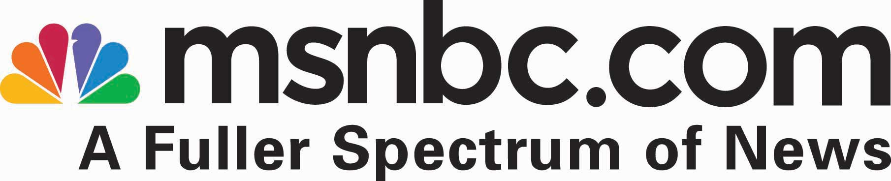
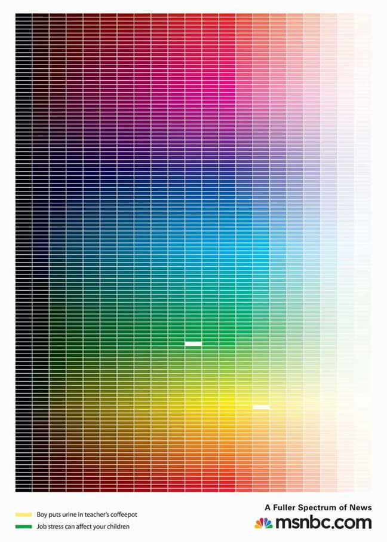
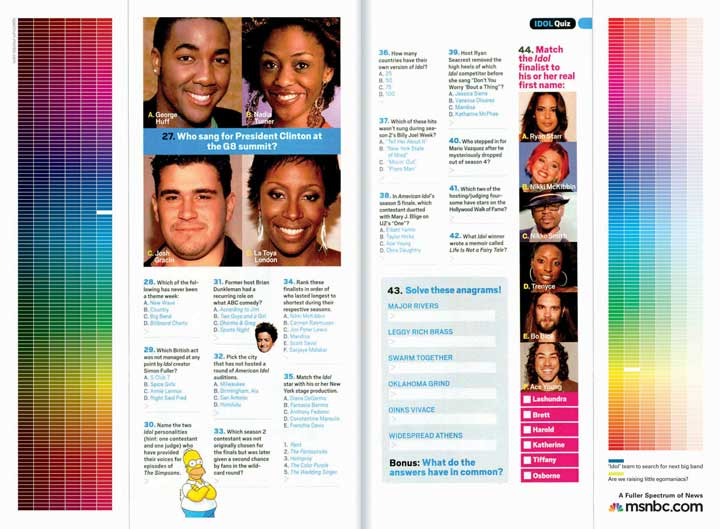
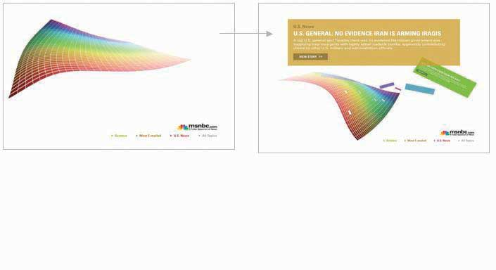

Figure 13.1 Zero Months to Launch!

Once all the planning, preparation, and production was complete, it was time for the campaign to come to life. On April 2, 2007, the first-ever msnbc.com branding campaign launched to the public in TV, print, and online media. Think of this chapter as a campaign portfolio. It will show you the executions and take you through the exact sequence of events as SS+K introduced the “Fuller Spectrum of News” campaign.
The campaign consisted of many interrelated pieces. All of them tied back to the major campaign objective of building a solid and positive brand image for msnbc.com. SS+K and its partners accomplished this by designing multiple executions using multiple platforms, from conventional print to innovations including the first-ever in-cinema game that allowed the audience to participate in the execution.
In order to keep track of all these elements, SS+K referred to a status chart, a tool many agencies use to keep track of the progress of the many moving parts involved in a campaign. Status charts are tailored to specific account or campaign needs and are managed by the account management and project management teams.
Figure 13.2

The status chart for the week of March 13, 2007. This summarized multiple elements, the current status, and what needed to happen next in order to keep the project moving toward completion.
Here’s what all the pieces of the campaign looked like at launch.
The first part of the work centered on the logo.
Figure 13.3
The new msnbc.com logo was a key change in the brand. The new logo was more Web-centric, and the lowercase letters made it more welcoming to readers.
While part of the team concentrated on the creative production elements, Danielle and Katie focused in with Catherine and her colleague Gina Stikes on how to present the campaign to the press.
SS+K used a press release, as you learned about in Chapter 9 "Choose Your Communication Weapons: SS+K Decides Upon a Creative Strategy and Media Tactics", to disseminate information about the campaign launch. But even before that, the PR team had given the Wall Street Journal an exclusive or first chance to cover a story. The reporter interviewed Catherine as well as Marty and some other folks from SS+K so that on the same day the campaign launched, the world was reading about it.
As you saw in the media plan we presented in Chapter 10 "Plan and Buy Media: SS+K Chooses the Right Media for the Client’s New Branding Message", SS+K ran print media in a variety of publications that appealed to the News Explorer.
Figure 13.4
The print executions feature the spectrum grid, with each brick representing a different story on msnbc.com. The colors that are knocked out from the spectrum are noted at the bottom as the colors and headlines are juxtaposed to tell the story of the full range of news on msnbc.com. SS+K produced all the print executions in house.
Figure 13.5
These one-third-page vertical ads were purchased to “hug” the editorial content in the middle of the page to show a strong connection between the content in the magazine and the content on msnbc.com.
In addition to full-page print ads within weekly magazines, the media buy can include other segments of a page. In the case of msnbc.com, The Media Kitchen bought one-third-page vertical ads on opposite sides. SS+K creatively used this buy to form “goalposts” around the page. Where possible, the editorial content of the page was taken into consideration when the team wrote headlines for the ads.
Another important element of the launch campaign was the television spot. This spot is created with building the understanding of the target audience, the News Explorer, and creatively communicating the “fuller spectrum of news” concept in mind.
Television was an important medium in the launch campaign because part of the objective was to reach a mass audience. Although media is continually becoming more and more fragmented through sites and niche channels, television remains one of the most effective ways to reach many people at once.
A new bonus of creative materials created for TV is the growing popularity of online video. While some argue that each execution should be created specifically for the medium, others argue that repurposing (reusing existing clips in new ways) is a great way to get the most bang for your production buck.
The Thirty-Second “Spectrum” Spot
(click to see video)The thirty-second “Spectrum” spot is the anthem for the msnbc.com campaign. It is a visual journey through the fuller spectrum of news. SS+K worked with Charlex on animation, Driver on production, and Endless Noise and Nutmeg on sound design and music to create all the TV spots.
The Ten-Second “Spectrum Rain” Spot
(click to see video)The ten-second “Spectrum Rain” spot told the story of the spectrum through simple visuals as well as sound. “Spectrum Rain” also ran as online video prerolls.
The Ten-Second “Spectrum Wall” Spot
(click to see video)The ten-second “Spectrum Wall” spot had each of the story bricks build the wall of the spectrum, while it reinforced the significance of the bricks with strong sound design. “Spectrum Wall” also ran as online video prerolls.
The creative elements of the online campaign had to be engaging in order to deliver on the Big Idea of enjoying the journey (“Dive In. Swim Around.”), so the team set out to make interactive and engaging banners. The banners appeared on different sites from ESPN (http://espn.go.com) to The Weather Channel (http://www.weather.com), with unique messaging and links for each of those unique placements.
Figure 13.6

These banners, titled “Subdivide,” would split stories and color bricks when the mouse scrolled over the banner, ultimately resulting in the full spectrum. SS+K worked with BEAM Interactive on all the banners.
Figure 13.7

The banners titled “Page Flip” had one color category flip through a range of stories when initiated by the mouse.
Figure 13.8

The “Helix” banners responded directly to a mouse-over by having the animation “follow” the direction of the mouse. The ad features rotating keywords that a user could click on.
Figure 13.9

The “Keywords” banner ads were built in Flash, rather than rich media, so they had an animation that would take a range of topics available on msnbc.com and slowly merge them into the spectrum.
The press started, and the initial paid launch elements ran heavily through the first six weeks. As they continued through the rest of the communications plan, more elements were introduced. The marketing elements were devices that, while introduced during the campaign, would live on after ads stopped running. You can still find these interactive elements by going to msnbc.com; there are even more of them since the first campaign launch in April 2007.
Figure 13.10
The NewsSkimmer screensaver pulls live RSS headlines from msnbc.com while the computer is sleeping. It is also fully customizable so the user can choose which feeds she wants to receive. SS+K worked with BEAM Interactive to produce the banners.
Amit Nizan, Matt Ferrin, and Sam Mazur
(click to see video)Sam Mazur, Matt Ferrin, and Amit Nizan explain the NewsSkimmer.
Another insight was that many News Explorers were casual game users. Because their demographics skewed a little older, SS+K recommended updating an old favorite. As a result, its new version of the classic “brick breaker” game used the treatment of the spectrum, in which each brick is a story, and made a game of collecting news while reaching the next level.
The game, which is RSS fed and was given the name NewsBreaker, was unveiled in April to time with the NewsSkimmer screen saver. Play the game yourself at http://www.newsbreakergame.com.
Figure 13.11

NewsBreaker game was designed to bring msnbc.com content to News Explorers in new and unexpected ways. SS+K worked with Fuel Industries to create this game.
Matt Ferrin, Sam Mazur, and Amit Nizan
(click to see video)Matt, Sam, and Amit talk about the reactions to the NewsBreaker game.
As the advertising and marketing elements came to life, msnbc.com and SS+K were preparing to launch the riskiest element of the marketing campaign.
As leaders and innovators, it was important for msnbc.com to flex its leadership muscle when it came to understanding technology. The team didn’t recommend any element of the campaign that didn’t answer to one of the stated goals, and they dismissed a few asymmetric ideas due to those qualifications. But NewsBreaker Live became the anchor of the campaign, and ultimately msnbc.com created a new medium. The technology had only been proven on a small scale, and the crowd reaction was unpredictable. Would they hate it, or would they love it? Would they remember who it came from, or would they ignore it completely?
The final push of the campaign came in June with the launch of the first-ever in-cinema interactive audience game, NewsBreaker Live. The game premiered in Los Angeles before the movie Spider-Man 3 and then moved on to Philadelphia and White Plains, New York.
Figure 13.12

msnbc.com introduced the first-ever audience in-cinema game: NewsBreaker Live. SS+K worked with the Brand Experience Lab and The Bridge Cinemas to produce and present this game. Audience members control the action on the screen by waving their arms. See the YouTube demo at http://www.youtube.com/watch?v=y6izXII54Qc.
The campaign centered on the overarching brand message, but there are also instances where you use your media buys to promote elements of your company or other marketing efforts. A few examples would be a flyer about an event or a newspaper ad about a sponsorship. Each print ad had the URL http://www.spectrum.msnbc.com.
Press coverage and management was ongoing throughout the campaign. It was led by Danielle Tracy and supported and implemented by Katie O’Kane and others.
Danielle Tracy
(click to see video)Danielle Tracy talks about launching the PR effort around the msnbc.com campaign.
Figure 13.13

This e-mail blast was sent to the New Yorker’s list as part of an added-value for the print buy. It was geo-targeted to readers who would be able to attend NewsBreaker Live in White Plains, New York.
Late in the campaign SS+K utilized the e-mail blast to promote the NewsBreaker Live game as it appeared in White Plains, New York. Each print ad had the URL http://www.spectrum.msnbc.com.
Figure 13.14

This page on the msnbc.com site, coined the “Spectrum Page,” is a destination for all elements of the campaign. Users can view TV spots, download NewsSkimmer, and play NewsBreaker all from one place.
Figure 13.15

A full timeline of all the work that SS+K and msnbc.com did together from pitch to launch of the first ever msnbc.com branding campaign.